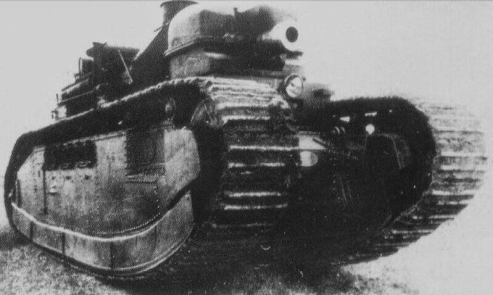

The Char 2c bis was a French heavy tank developed in the 1930s and used during World War II. It was an evolution of the Char B (Bleu) and featured improved armor and firepower compared to earlier models. The Char 2c bis was equipped with a 75 mm SA 35 gun, which provided better penetration capabilities against enemy armor. Its armor protection was enhanced, with frontal armor reaching up to 80 mm, making it more resistant to enemy fire. The Char 2c bis saw limited service during the early stages of the war, particularly in France's defense against German invasion in May 1940. It was eventually replaced by more advanced designs such as the Char Bis and later models like the Char Eclair.

- Characteristics:
- Type: Heavy tank
- Weight: 70 tons
- Crew: 4
- Gun: 75mm
- Speed: 35 km/h